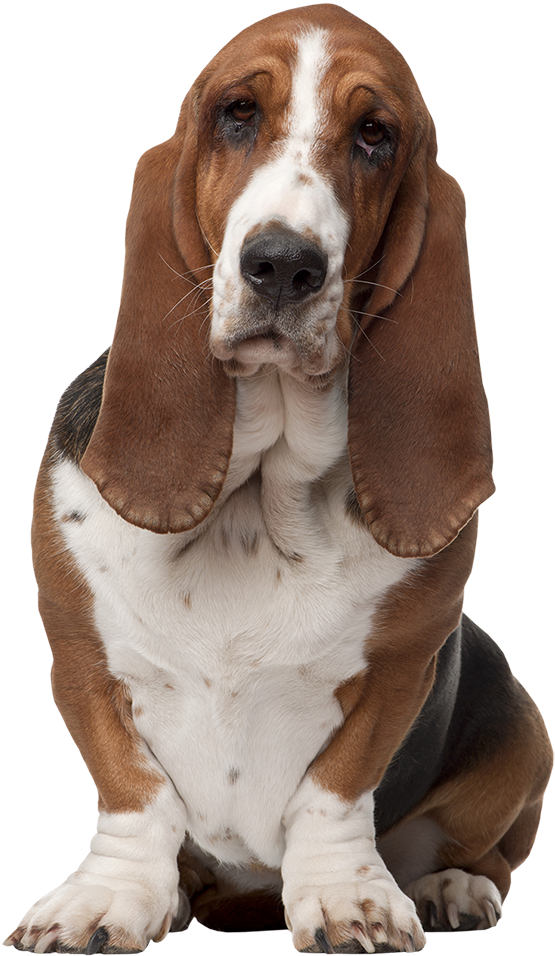

Golden Retriever

Le chien intelligent, affectueux et joueur, au pelage doré, qui allie douceur, énergie et dévouement.
Le Golden Retriever est un chien de race moyenne à grande, originaire du Royaume-Uni, principalement élevé pour la chasse au gibier d’eau. Il se distingue par son pelage long, dense et imperméable, de couleur dorée à crème, avec un sous-poil épais qui le protège du froid.
Sa silhouette est harmonieuse et musclée, avec une tête large, un stop bien marqué, des yeux foncés et expressifs, ainsi qu'une queue portée droite ou légèrement recourbée. C’est un chien au tempérament équilibré, très sociable, affectueux et docile.
Énergique et joueur, le Golden Retriever a besoin de stimulation physique et mentale régulière. Il apprécie les longues promenades, la natation et les jeux interactifs. Son éducation est généralement facile grâce à son caractère coopératif, mais elle doit être douce, cohérente et positive. Son pelage doit être brossé plusieurs fois par semaine pour éviter les nœuds et limiter la perte de poils, surtout lors des périodes de mue.
Basset Hound
Le chien calme et affectueux, à la silhouette unique, qui charme par son regard tendre et ses grandes oreilles.
Le Basset Hound est une race originaire de France, facilement reconnaissable à son corps long, ses pattes courtes, son dos droit et ses grandes oreilles tombantes. Il possède un odorat très développé, héritage de son passé de chien de chasse spécialisé dans le pistage du petit gibier.
D’un tempérament doux, tranquille et sociable, il s’entend bien avec les enfants et les autres animaux, ce qui en fait un excellent compagnon de famille. Il est également fidèle, patient et affectueux. Son côté parfois têtu nécessite une éducation douce mais constante, basée sur la motivation plutôt que la contrainte.
Le Basset Hound a besoin de balades régulières pour rester en forme, car il peut être sujet au surpoids. Il est peu demandeur en toilettage, mais ses oreilles longues doivent être surveillées et nettoyées fréquemment. Attaché à son foyer, il n’aime pas être laissé seul trop longtemps. Bien adapté à la vie en intérieur, il apprécie le confort d’un environnement calme et attentionné.
Border Collie
Le chien intelligent, agile et dévoué, parfait pour les maîtres dynamiques et engagés.
Le Border Collie est une race originaire des frontières anglo-écossaises, connue pour son intelligence remarquable, son agilité et sa capacité à travailler avec intensité. Il a longtemps été utilisé comme chien de troupeau et reste aujourd’hui l’un des chiens les plus efficaces pour cette tâche.
Le Border Collie a besoin de beaucoup d’exercice physique et mental au quotidien pour s’épanouir pleinement. Sans cela, il peut rapidement développer de l’ennui ou du stress. C’est un chien affectueux et loyal qui excelle dans les foyers actifs. Son pelage demande un brossage régulier, notamment en période de mue, et son éducation, bien que facile, doit être cohérente, bienveillante et stimulante.
Bouledogue

Un compagnon affectueux, calme et attachant, à la bouille irrésistible et au cœur tendre.
Le Bouledogue est une race de petit à moyen gabarit, reconnaissable à sa silhouette compacte, son museau aplati et ses plis faciaux caractéristiques. Il existe en plusieurs variétés, comme le Bouledogue français et anglais, tous deux populaires pour leur allure unique et leur tempérament doux.
C’est un chien très attaché à son maître, affectueux et joueur. Il aime passer du temps à l’intérieur, couché près de sa famille, et s’adapte facilement à la vie en appartement. Bien qu’il soit calme, il sait faire preuve d’un grand enthousiasme lorsqu’il joue ou interagit avec des enfants ou d’autres animaux.
Le Bouledogue demande peu d’entretien, mais son nez écrasé nécessite une attention particulière en période de chaleur ou d’effort. Il peut être sujet à certains problèmes respiratoires ou articulaires. Une éducation douce et patiente convient parfaitement à son caractère sensible. Il s’épanouit pleinement dans un foyer aimant et présent.
Berger Malinois
Un chien protecteur, énergique et intelligent, taillé pour l’action et la complicité.
Le Berger Malinois est une race belge de chien de berger, appréciée pour son intelligence, sa réactivité et sa capacité à apprendre. C’est un chien de travail très polyvalent, utilisé dans la police, les secours, la garde et les sports canins.
Doté d’un corps musclé et agile, il possède un pelage court et dense, généralement fauve charbonné avec un masque noir. Très proche de son maître, il est fidèle, attentif et motivé par la tâche. Il a besoin d’une relation forte, basée sur la confiance et la régularité.
Le Malinois demande beaucoup d’exercice, aussi bien physique que mental. Il ne convient pas à un maître sédentaire, mais s’épanouit pleinement dans une vie active.